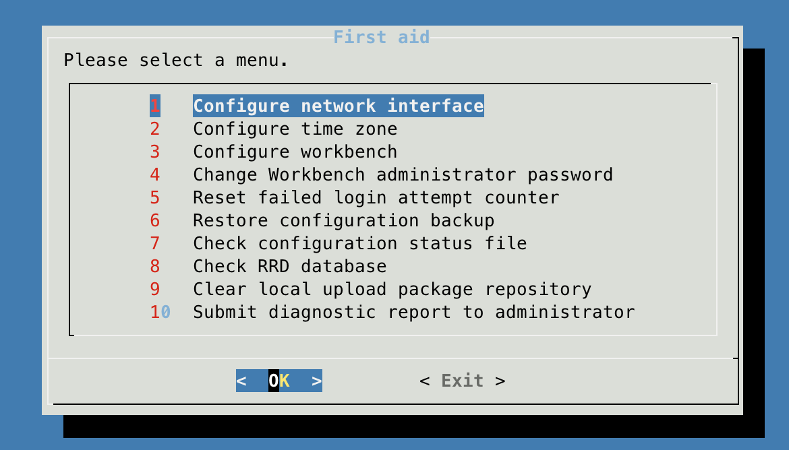

you can use the "ping" command to obtain the IP address:
ping openmediavaultType the URL http://openmediavault/ or the IP address to your web browser, the default login account is:
Username: admin Password: openmediavault
Click on the profile icon in the upper-right corner of the web page, then select "Change Password".
Go to System -> Workbench and adjust the "Auto Logout" time setting.
Regular Account:
User Name: pi
Password: pi
Root:
User Name: root
Password: fa
ssh pi@YourIPAddress
The default password is "pi".
sudo passwd root sudo passwd pi
Login to your OMV via SSH as root user:
ssh root@IPAddress
Excute the following command:
omv-firstaid
Something like this should appear:
